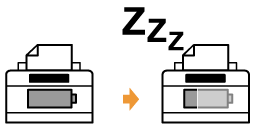
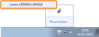
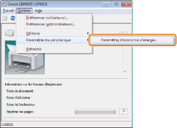
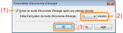

Vous pouvez réduire de manière significative la consommation d'énergie de l'imprimante en utilisant le mode d'économie d'énergie lorsque vous n'utilisez pas l'imprimante pendant un certain laps de temps.

Vous pouvez configurer l'imprimante pour qu'elle passe en mode d'économie d'énergie lorsque l'ordinateur n'envoie pas de données ou lorsque l'imprimante reste dans le même état au-delà du délai défini. Pour ce faire, utilisez la procédure suivante.
1
Cliquez sur [ ] dans la barre d'état système Windows, puis sélectionnez le nom de l'imprimante.

2
Dans le menu [Options], sélectionnez [Paramètres du périphérique] → [Paramètres d'économie d'énergie].

3
Spécifiez les paramètres du mode d'économie d'énergie.
|
(1)
|
Cochez la case [Entrer en mode d'économie d'énergie après une période donnée].
|
|
(2)
|
Spécifiez le délai qui doit s'écouler avant que l'imprimante passe en mode d'économie d'énergie, dans le champ [Délai d'activation du mode d'économie d'énergie].
|
|
(3)
|
Cliquez sur [OK].
|

|
REMARQUE
|
||
|
A propos du réglage du délai d'entrée en mode d'économie d'énergie
Vous pouvez choisir [1], [5], [10], [15], [30], [60], [90], [120], [150] ou [180] minutes comme valeur [Délai d'activation du mode d'économie d'énergie]. La valeur par défaut est [1] minute.
|